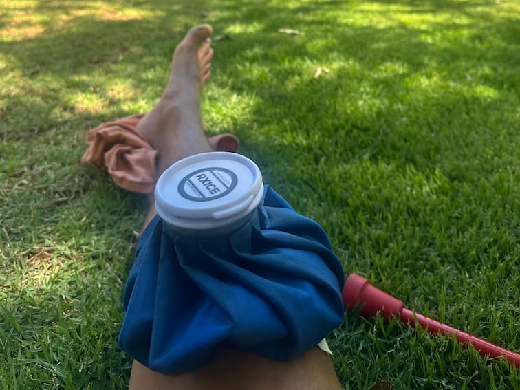
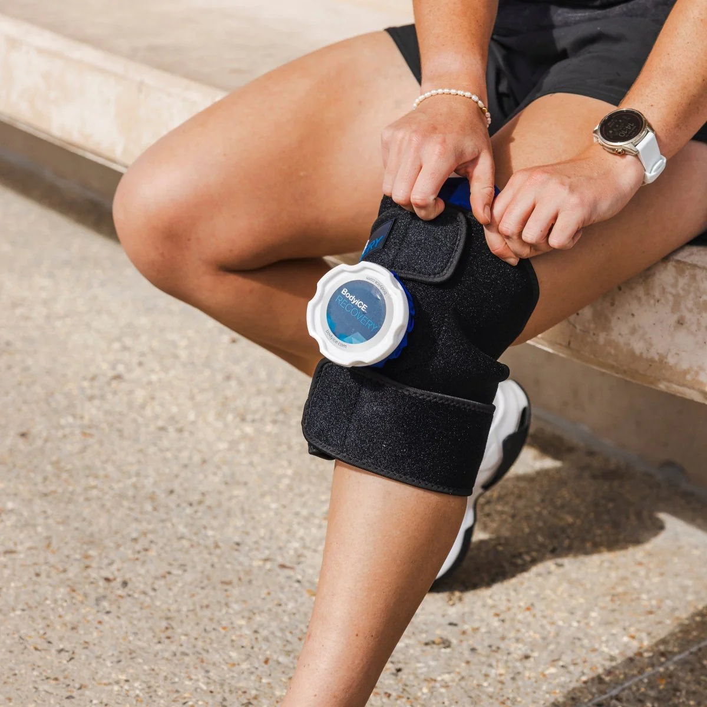
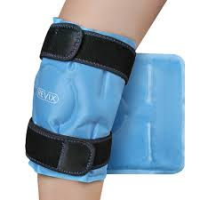

A Bolsa de Gelo Clássica: meu segredo para recuperar fora de casa
As máquinas ajudam muito em casa, mas a batalha do inchaço acontece mesmo quando você sai para trabalhar, viajar ou viver. Para mim, uma bolsa de gelo azul simples virou a companhia mais confiável.

Por que três é melhor do que uma
A recuperação não pausa só porque você precisa ir ao escritório ou pegar estrada. Eu percebi rápido que, se eu não tivesse gelo disponível na hora, eu inventava desculpas e pulava a sessão. Minha solução? A “Regra do Três”.
Eu deixava uma bolsa em casa, uma no escritório e outra permanentemente na mochila. E não era qualquer bolsa: eu usava aquelas clássicas de tecido, com tampa rosqueável e tiras integradas. Diferente de um saco plástico que você apenas apoia em cima, as tiras permitem prender a bolsa firme na articulação.
Não é uma compressão “de máquina”, mas chega perto. Ela empurra o gelo para todos os contornos do joelho e isso deixa o frio mais intenso e muito mais eficiente do que uma bolsa solta.
“A melhor ferramenta de recuperação é a que está com você. Uma bolsa simples e um punhado de gelo podem evitar uma crise antes mesmo de começar.”
Bolsa de gelo de tecido (com tiras)
O modelo clássico com tampa rosqueável, usando gelo de verdade e um pouco de água.
- ✅ As tiras criam um encaixe firme, “quase compressivo”
- ✅ Fica gelada por mais tempo do que gel
- ✅ Recarrega em qualquer lugar (café, escritório, academia)

Gelo em gel e sacos plásticos
Os “géis azuis” tradicionais ou um saco tipo ziploc com cubos de gelo.
- ❌ Os gels perdem o “poder” em ~15 minutos
- ❌ Sacos plásticos vazam e “suam” condensação
- ❌ Difícil manter no lugar sem ficar segurando
- ⚠️ Serve como plano B, mas não para inchaço mais sério.

Como usar gelo de verdade do jeito certo
Gelo em quantidade faz diferença
Se você usar bolsa de gelo do jeito certo, seu freezer não vai dar conta. Eu comecei a comprar sacos de gelo de 5 kg. É barato e ter um estoque grande faz você não hesitar em começar uma sessão nova.
O “truque do restaurante”
Viajando ou almoçando fora? Sem vergonha. Quase todo restaurante tem máquina de gelo. Peça para encher a bolsa. Na maioria das vezes eles topam, e isso mantém sua recuperação nos trilhos em eventos sociais.
Coloque um pouco de água
Dica prática: encha com gelo e adicione meia xícara de água bem gelada. Isso cria uma “pasta de gelo” que elimina espaços de ar e faz a bolsa moldar perfeitamente na patela.
Ar é o inimigo
Depois de encher, aperte a bolsa para expulsar o ar antes de fechar a tampa. Menos ar significa mais contato com a pele e um gelo muito mais eficiente.